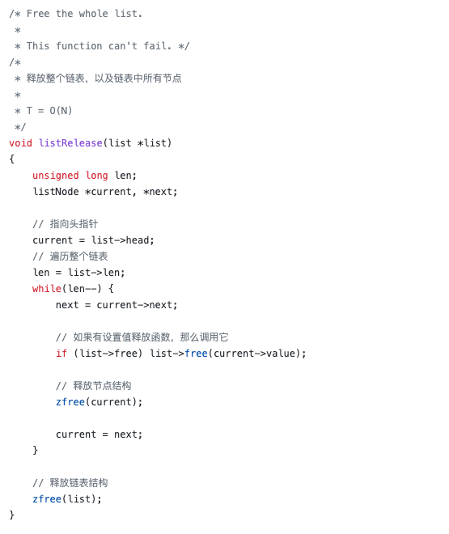
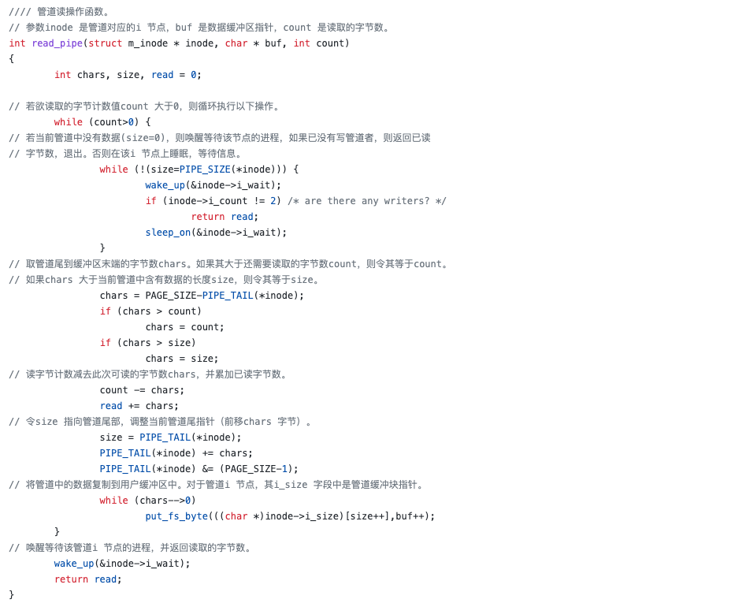
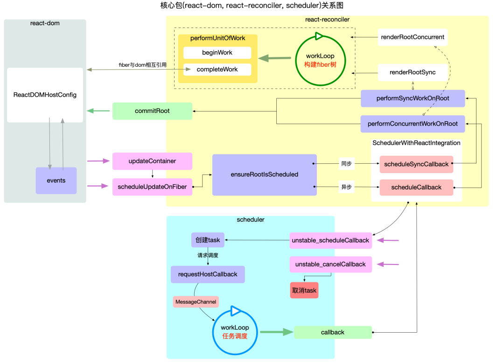
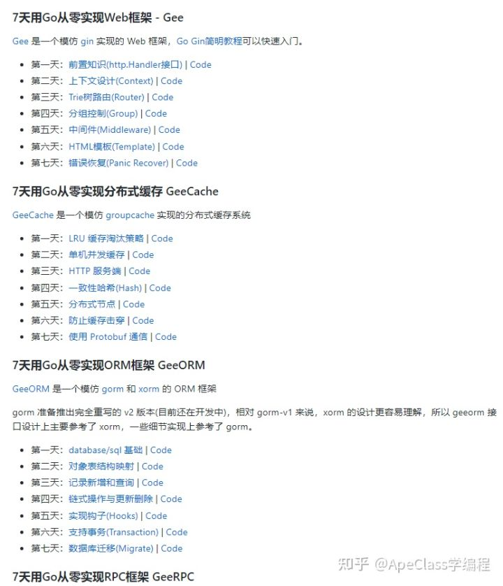
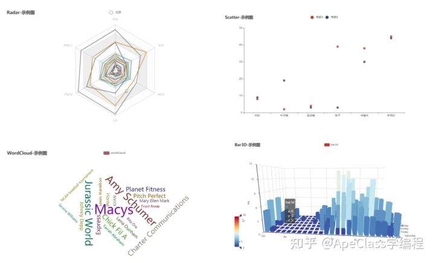

note
记录一些笔记，包含工具，代码等等
tools
常用的工具
sublime-text
一、install
brew install sublime-text
二、config
2.1 install package contro
通过View -> Console菜单打开命令行，粘贴如下代码：
import urllib.request,os; pf = 'Package Control.sublime-package'; ipp = sublime.installed_packages_path(); urllib.request.install_opener( urllib.request.build_opener( urllib.request.ProxyHandler()) ); open(os.path.join(ipp, pf), 'wb').write(urllib.request.urlopen( ' http://sublime.wbond.net/' + pf.replace(' ','%20')).read())
git error
一、error: cannot lock ref ‘refs/remotes/origin/master’
报错如下：
remote: Azure Repos
remote: Found 41 objects to send. (2 ms)
Unpacking objects: 100% (41/41), 59.60 KiB | 344.00 KiB/s, done.
error: cannot lock ref 'refs/remotes/origin/master': is at XXXXX but expected OOOOO
From https://dev.azure.com/12345678/987654321
! 1111111..ffffffff master -> origin/master (unable to update local ref)
解决方案
CSDN 上也网上找了一些解决方案，不过都说是要删除本地的文件或者是分支之类的，需要做备份什么的就很麻烦，感觉就不太好。最后还是在 Stack Overflow 的这个 post：cannot lock ref 'refs/remotes/origin/master’上找到了答案。
方案 1：update-ref 这个是解决了我的问题的答案：
# 先更新一下reference
git update-ref -d refs/remotes/origin/[locked branch name]
# 随后同步代码
git pull
发生这个情况的原因是本地的 reference 和云端的不一样时导致的，因此同步一下双方的 reference 即可。
方案 2：prune remote
# 清理远程的dev分支
git remote prune origin
git remote prune origin 可以清理远程的本地分支，但是不会动本地的开发分支。
参考：error: cannot lock ref 'refs/remotes/origin/master'
core java
nio
spring cloud
eureka
核心的概念
-
服务注册（Register）
当Eureka客户端向Eureka服务注册器注册时，它提供自身的元数据，比如IP地址、端口等信息。 -
服务续约（Renew）
在服务续约中，Eureka客户端会每隔30秒发送一次心跳来进行服务续约。通过续约来告知Eureka服务器该客户端仍然存在，希望服务器不要剔除自己。 -
服务下线（Cancel）
Eureka客户端在程序关闭时想Eureka服务器发送取消请求。发送请求后，该客户端实例信息将从服务器的实例注册列表中删除。 -
服务剔除（Eviction）
在默认的情况下，当Eureka客户端连续90秒没有像Eureka服务器发送服务续约的心跳（Heartbeat），Eureka服务器就会将该服务实例从服务注册列表中删除，即剔除该服务。 -
获取服务注册列表信息（Fetch Registries）
Eureka客户端从Eureka服务器获取服务注册列表信息，并将其缓存到本地。客户端会使用该信息查找其他服务，从而进行远程调用。该注册列表信息定期（每隔30秒）更新一次。每次返回的注册列表信息可能与Eureka客户端的缓存信息有所不同，Eureka客户端会自动处理两者之间的差异。
URL
- 获取注册app信息
GET http://localhost:8761/eureka/apps
- 获取service注册信息
GET http://localhost:8761/eureka/apps/service-name
other
一些文章，资料等等
github EbookFoundation za1lib电子书下载 或者https://zh.b-ok.asia/
如何轻松阅读github项目源码
一、C
1.1 redis-3.0-annotated（Redis）
Star 数：7.9k｜语言：C
Redis 是一个基于内存、分布式、可选持久性、开源的 KV（键值）存储数据库。
该项目是 Redis 3.0 版本源码注释。 
https://github.com/huangz1990/redis-3.0-annotated
1.2 linux-0.12（Linux）
Linux 是一种开源的类 UNIX 操作系统。
该项目是 Linux 内核 0.12 版本完全注释版。
我最初是在 GitHub 找到了别人上传的旧版（0.11）注释源码，一通搜索下发现了原作者赵炯老师的网站。第一版发布于 2003 年，最新更新于 2021 年，维护了 18 年。这个阅读 Linux 源码的项目，虽然没有上传到 GitHub 但是内容、注释的源码、配套工具全部开源。 
http://www.oldlinux.org/Book-Lite/
二、C++
2.1 reading-source-code-of-leveldb-1.23（LevelDB）
Star 数：15｜语言：C++
LevelDB 是一个由 Google 开源的持久化 KV（键值）存储数据库。
该项目是 LevelDB 1.23 版本源码阅读笔记，包括：分析 DB 运作流程、STable 等文件格式以及 Compaction 过程。

https://github.com/SmartKeyerror/reading-source-code-of-leveldb-1.23
三、java
3.1 spring-analysis（Spring）
Star 数：10k｜语言：Java
Spring 框架是一个开源的 Java 全栈应用程序框架和控制反转容器实现，多用于构建企业级 Web 应用。
该项目是 Spring 4.3.18 版本的源码阅读笔记，包含源码注释、类图、文字描述。

https://github.com/seaswalker/spring-analysis
3.2 learn_netty_source_code（Netty）
Star 数：1k｜语言：Java
Netty 是一个 Java 异步事件驱动的网络应用框架。
该项目是 Netty 4.0.33 版本源码分析教程。

https://github.com/yongshun/learn_netty_source_code
四、Go
4.1 grpc-read（gRPC）
Star 数：154｜语言：Go
gRPC 是 Google 发起的一个开源 RPC 系统，基于 HTTP/2 协议传输，使用 Protocol Buffers 作为接口描述语言。
该项目是 gRPC Go 版本实现：grpc-go 的源码解读。

https://github.com/lubanproj/grpc-read
五、python
5.1 annotated-py-projects
Star 数：312｜语言：Python
该项目包含多种 Python Web 框架源码解读，包括：Flask、Sanic、web.py 等项目的源码注释。

https://github.com/hhstore/annotated-py-projects
六、JavaScript
6.1 learnVue（Vue.js）
Star 数：11k｜语言：JavaScript
Vue.js 是一个用于创建用户界面的开源 JavaScript 框架。
该项目包含 Vue.js 源码注释以及作者学习 Vue.js 源码过程中的一些心得和收获。

https://github.com/answershuto/learnVue
6.2 react-illustration-series（React）
Star 数：1.3k｜语言：TypeScript
React 是一个声明式、高效且灵活的用于构建用户界面的 JavaScript 库。
该项目是以图文的方式解读 react@17.0.2 源码，包含大量配图。

https://github.com/7kms/react-illustration-series
golang项目入门
不了解Golang一上来就练一些项目，可能会处处受挫，打击学习信心。
如果你是第一次接触Go，建议先从基础的入门开始，由易到难，循序渐进式学习，可以少走一些弯路。
我整理了一份自学干货，会按照由入门基础>>>小项目练手推荐>>>大项目参考了解架构思路，由易到难的顺序给大家分享，希望能帮助你更快掌握这门强大的语言。
1.《Go 入门指南》
29.6k stars
传送门： https://github.com/unknwon/the-way-to-go_ZH_CN
首先必须推荐《Go 入门指南》，这本开源书籍是unknown Joe Chen苦于当时国内没有比较好的 Go 语言书籍，所以翻译了这本国外书籍《The Way to Go》。现在以开源的形式免费分享给有需要的 Go 语言爱好者。
书籍部分目录参考

这本书将从最基础的概念讲起，然后逐步深入学习Go高级编程技巧，如读写数据、错误处理和测试、协程和通道、网页应用等，内容比较体系易懂，很适合初步学Go语言的同学。
2.从零开始学 Go Web 编程：build-web-application-with-golang
40.3k stars
传送门：https://github.com/astaxie/build-web-application-with-golang
作者astaxie从零开始：从 Go 的环境安装和配置、基本语法再到 Go Web 开发，手把手全面教了一遍。
想要学会Go Wed编程，这本开源书籍不容错过，打好基础，再去做其他的项目才会更加得心应手。
 在你打好了一定的基础之后，再挑战一些稍微大的项目练练手，你会更容易领悟到 Go 语言在实际中是如何应用的。
在你打好了一定的基础之后，再挑战一些稍微大的项目练练手，你会更容易领悟到 Go 语言在实际中是如何应用的。
3.Training for Golang (go language)
8.1k stars
传送门：https://github.com/GoesToEleven/GolangTraining
这个整合了各种go特性例子代码案例，例子相当丰富且代码行数不多，很适合自己亲自敲一敲跑一跑，你一定会学到不少的东西。

4.七天用 Go 从零实现系列：7days-golang
10.5k stars
传送门：https://github.com/geektutu/7days-golang
这个极客兔兔 大佬分享的7天用Go从零实现系列，包括Web框架 、 分布式缓存、ORM框架、RPC框架、WebAssembly等等，这些500行至3000行的项目，很适合有一定基础的用来练手。

从这里开始的项目就有些难度了：
5.Go 数据可视化项目：go-echarts。
4.6k stars
传送门：https://github.com/go-echarts/go-echarts
在 Golang 这门语言中，目前数据可视化的第三方库还是特别少，go-echarts的开发就是为了填补这部分的空隙。 Apache ECharts是非常优秀的可视化图表库，凭借着良好的交互性，精巧的图表设计，得到了众多开发者的认可。也有其他语言为其实现了相应语言版本的接口，如 Python 的pyecharts，go-echarts 也是借鉴了 pyecharts 的一些设计思想。
你可以挑选对自己最有帮助的数据可视化模型代码来研究学习，然后一个个攻破。



Go项目进阶：
从这里的开始项目体系比较庞大，难度也较大，不过项目都挺优秀的，可以了解项目的设计理念，整理分享给大家，大家量力而行：
6.gochat
1.8k stars
传送门：LockGit/gochat
gochat 是纯 Go 实现的轻量级即时通讯系统。技术上各层之间通过 RPC 通讯，使用 Redis 作为消息存储与投递的载体，相对 Kafka 操作起来更加方便快捷。各层之间基于 etcd 服务发现，在扩容部署时将会方便很多。架构、目录结构清晰，文档详细。而且还提供了 Docker 一键构建，安装运行都十分方便。
7.API框架
3.4k stars
传送门：https://github.com/xinliangnote/go-gin-api
基于 Gin 进行模块化设计的 API 框架，封装了常用功能，使用简单，致力于进行快速的业务研发。 比如，支持 cors 跨域、jwt 签名验证、zap 日志收集、panic 异常捕获、trace 链路追踪、prometheus 监控指标、swagger 文档生成、viper 配置文件解析、gorm 数据库组件、gormgen 代码生成工具、graphql 查询语言、errno 统一定义错误码、gRPC 的使用、cron 定时任务 等等。
8.容器技术docker
63.1k stars
传送门：https://github.com/moby/moby
Docker 是一个开源的应用容器引擎，让开发者可以打包他们的应用以及依赖包到一个可移植的容器中，然后发布到任何流行的 Linux 机器上，也可以实现虚拟化。 容器是完全使用沙箱机制，相互之间不会有任何接口（类似 iPhone 的 app）。几乎没有性能开销,可以很容易地在机器和数据中心中运行。最重要的是,他们不依赖于任何语言、框架或包装系统。
9.PaaS工具 kubernetes
88.5k stars
传送门：https://github.com/kubernetes/kubernetes
Kubernetes 是来自 Google 云平台的开源容器集群管理系统。基于 Docker 构建一个容器的调度服务。该系统可以自动在一个容器集群中选择一个工作容器供使用。其核心概念是 Container Pod。
10.数据库技术 pingcap/tidb
31.3k stars
传送门：https://github.com/pingcap/tidb
TiDB 是国内 PingCAP 团队开发的一个分布式 SQL 数据库。其灵感来自于 Google 的 F1, TiDB 支持包括传统 RDBMS 和 NoSQL 的特性。
11.gohugoio
59k stars
传送门：https://github.com/gohugoio/hugo
Hugo是由Go语言实现的静态网站生成器；简单、易用、高效、易扩展、快速部署；相比于Hexo、Jekyll，hugo的优势是生成速度极快。
12.存储技术 IPFS
13.6k stars
传送门：ipfs/go-ipfs
IPFS 是分布式文件系统，寻求连接所有计算机设备的相同文件系统。在某些方面，这很类似于原始的 Web 目标，但是 IPFS 最终会更像单个比特流群交换的 git 对象。IPFS ＝ InterPlanetary File System